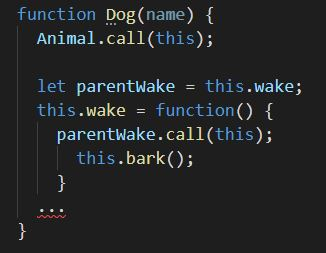

Inheritance in JavaScript
by Victoria Likhuta
Types of inheritance in OOP
Class-based programming (classical inheritance)
Prototype-based programming (prototypal inheritance)
- Java
- C++
- JavaScript
- Maple
Prototype chains

Inheritance implementation approaches
Functional
Prototypal

Functional inheritance
Functional inheritance
Overriding parent methods

Functional inheritance
Changing parent methods
Prototypal inheritance
Prototypal inheritance
Inheritance by using __proto__


Prototypal inheritance
Inheritance by using Object.setPrototypeOf()

Prototypal inheritance
Inheritance by using prototype property and constructor function

Prototypal inheritance
Inheritance by using Object.create()

Prototypal inheritance
Overriding parent methods


Prototypal inheritance
Changing parent methods


Inheritance by using Class-notation

Pros and cons of functional and prototypal inheritance
| Functional inheritance | Prototypal inheritance |
|
|
Thank you!